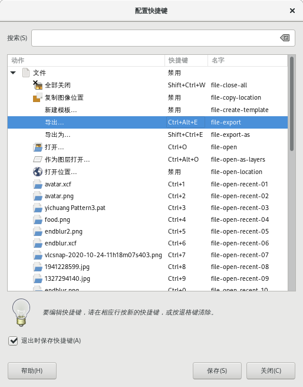

编辑→快捷键
此命令会打开“配置快捷键”对话框，您可以对快捷键进行设置。
很多常用的菜单命令都有快捷键。
如果一个菜单命令您经常使用但没有快捷键，那么您可以自己创建一个快捷键；另外，您也可以修改已有的快捷键。
此菜单命令没有快捷键。

配置快捷键对话框
使用“配置快捷键”对话框
点击菜单 编辑→首选项→界面→配置快捷键 即可进入该编辑器。
如对话框所示，您可以在“动作”区域选择要创建快捷键的命菜单令。
点击对应“快捷键”的位置，会显示新建加速键。
此时即可输入快捷键组合，并且此位置会显示您输入的快捷键组合。
点击对话框底部的“保存”按钮。
打开对应的菜单命令查看结果即可。
使用首选项中的“动态快捷键”
首先，你必须勾选菜单 编辑→首选项→界面→使用动态快捷键 来激活这一功能。这个选项通常未勾选，主要是为了防止快捷键被意外改动。
还要勾选 退出时保存快捷键 选项，这样你的快捷键就会被保存下来。
要创建一个快捷键，只需将鼠标指针放在菜单中的一个菜单命令上，把鼠标指针停留在菜单命令上不要移动，然后输入需要的快捷键，然后你就会看到这个快捷键已经出现在菜单命令的右边。
提示
自定义快捷键储存一个文本文件中，文件名为 menurc ，您可以备份此文件，也可以把此文件拷贝到其它计算机上供其他人使用。
menurc 文件存储的位置与 gimprc 文件位置相同，具体请参考编辑→首选项⇒键盘快捷键文件